중간 체크포인트 · 회전 미통과 · 제품77 기본 경로 유지 · 미관 성공 아님
실제 현재 변형 정점/원본 UV·재질·alpha로 GPU에서 BVH refit → 가림 query → 공동 선택 → 별도 native 합성을 수행했습니다. 오프라인 선택을 재생한 결과가 아닙니다. 28장 관측 중 정상 렌더 serial별 합성41회, source Graph42회입니다. 외부 관찰기 연결이며 제품의 기본 callback에는 아직 통합하지 않았습니다.
실제 0→0.999985픽셀 상대 위상10장에서는 canonical 형태와 RGB 서명이 각각 하나였습니다. 보행8장은 실제 표면/자세/가림 변화가 있으므로 단순 셀 수 불변을 요구하지 않습니다. 회전10장 중4장에서 미확정1~6 native 픽셀이 남았습니다. 그 부분은 원본을 그대로 보존하고 실패로 기록했습니다.
독립 CPU의 실제 삼각형/원본 alpha 계산과 회전4장의 최종 RGB·owner·깊이는 정확히 일치합니다. 이는 구현 이식 오차를 배제하는 근거이며, 동률의 미술적 정답이나 누락된 바탕을 보장하지 않습니다. 이 CPU 검사는4장만 냉시작했으므로 미관측 warm history 전체 동등성을 주장하지 않습니다.
남은 원인: 정확한 coverage 동률6 canonical 셀, 바탕 복원3 native 픽셀입니다. frame128의2픽셀은 실제 머리카락 바탕이 있지만 피부만 받는 복원 계약이 거부했습니다. frame134의1픽셀은 피부 교차/base/backing이 없고 실제 world underlay는 미캡처입니다. 주변 색을 만들어 채우지 않았습니다.
알고리즘 버퍼 최대6,678,916bytes (가변 canonical ROI에 따라 재할당). GPU→CPU 읽기는 추가 runtime 클래스에 없고, 여기의 읽기는 진단 캡처입니다. 정적 topology BVH 구축 이후 매 프레임 O(T) refit·계층 query를 사용합니다. GPU 시간·제품 FPS는 미측정입니다. 여러 view 동시 격리·색/영역 독립·명시적 cache 무효화·중도 취소·생성 실패·중복 해제 검사는 별도 GPU 시험에서 통과했습니다.
정상 Edit 종료, scene/입력 객체와22값·장치·옵션·pipeline/time·dirty31 유지, 직접 직렬화47/47 동일, RT30→30을 확인했습니다. Unity allocated 증가35.36MiB는 물리 RAM/누수 판정이 아닙니다.
요약/한계 · 동률·바탕 좌표/원본 수치 · CPU/GPU 비교 · 동률 선택 비교 · 수명 검사 · GPU 자원 소유 · Query/Select/Compose · 정상 serial별 최종 합성
냉시작 부분 Close50에서0=미확정/원본 보존,1=홍채 우선,4=흰자 우선. 후자의 두 정책은 디자인 비교이며 채택하지 않았습니다. 원본 key witness가 현재 가시할 때만 이전 source identity를 쓸 수 있습니다.
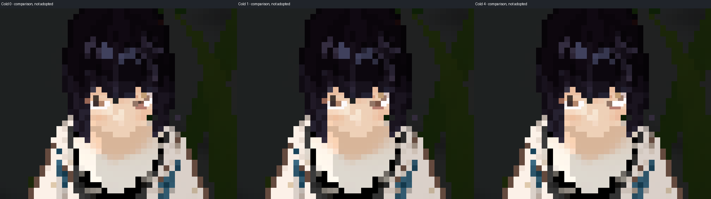
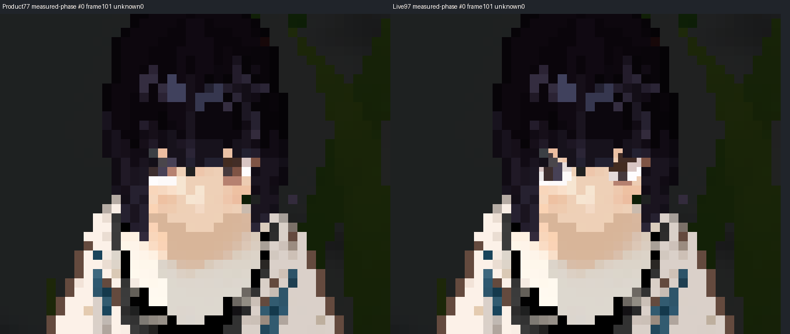
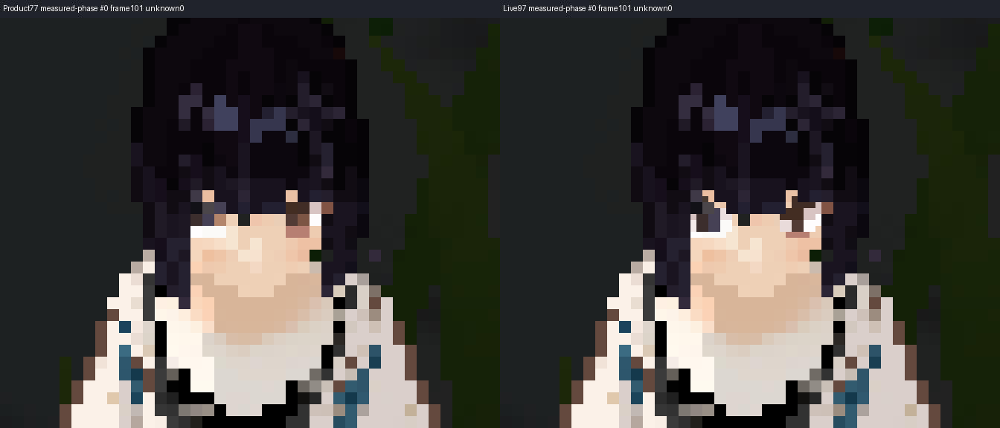
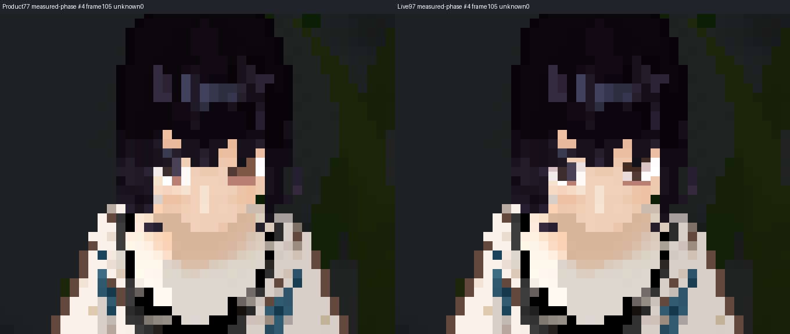
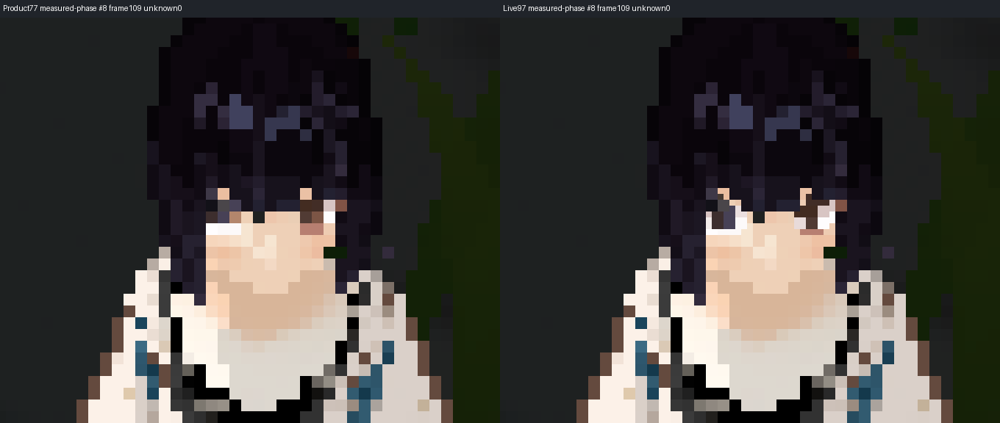
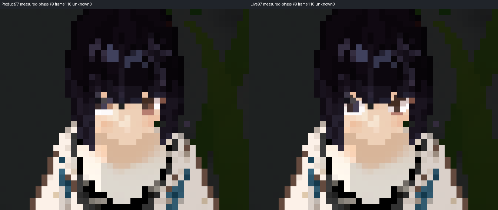
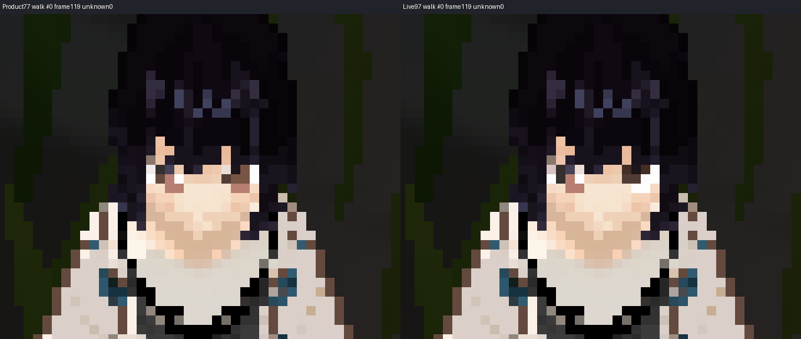
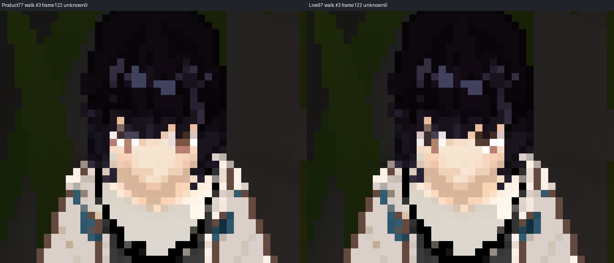
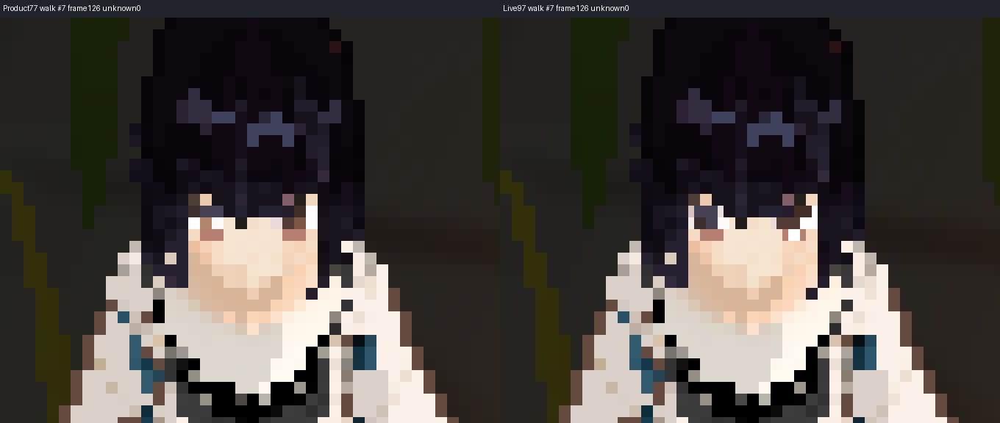
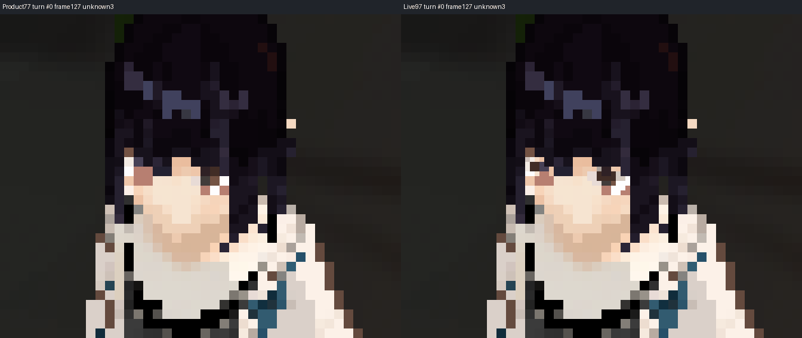
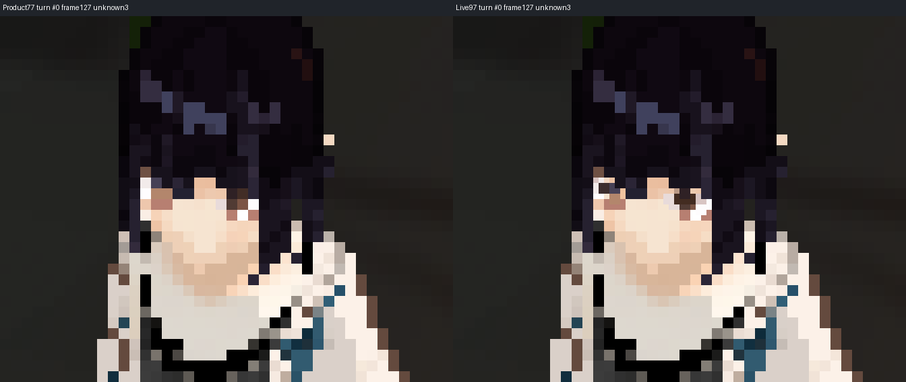
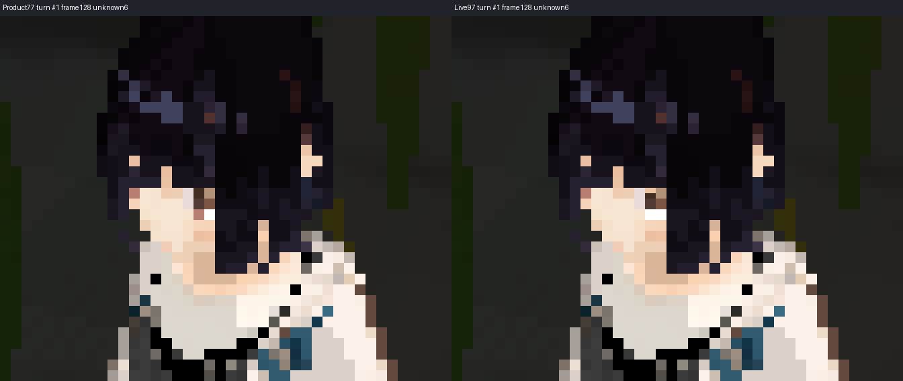
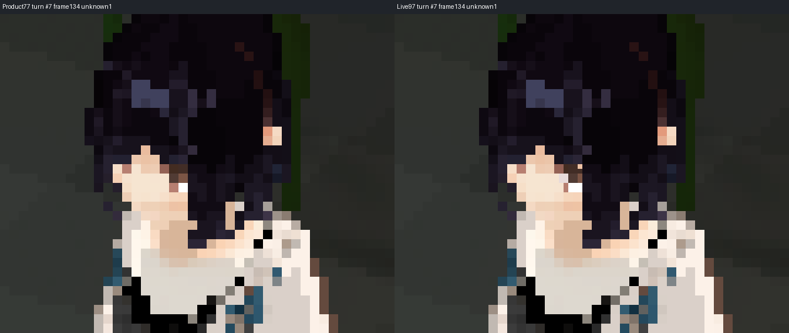
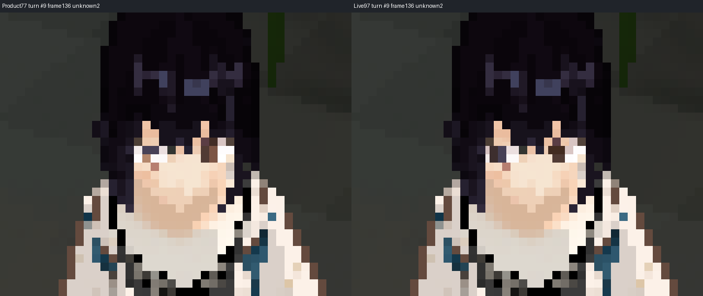